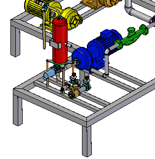
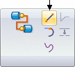
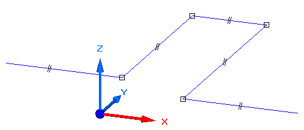
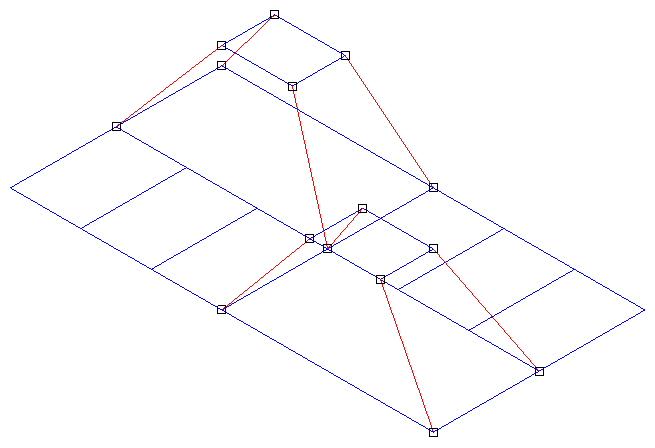
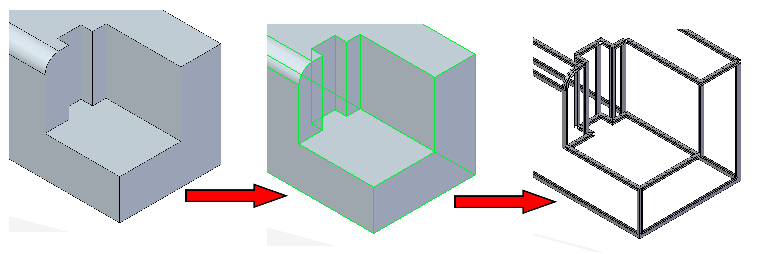
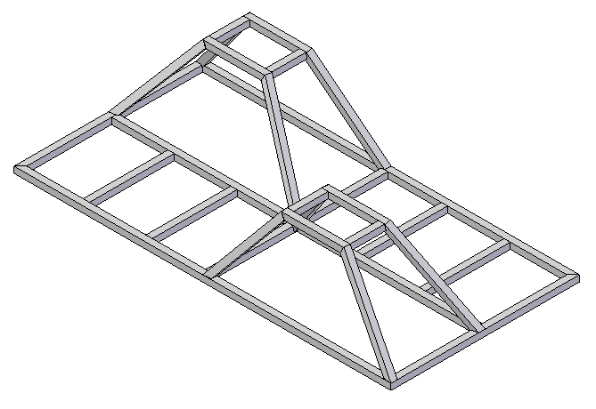
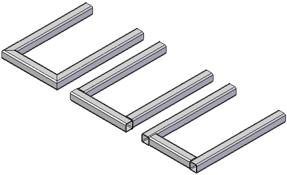

Structural frame design workflow
Structural frame design overview
You can create path segments and structural frames using the Frame Design application in an assembly document. Frame Design displays additional, specialized commands for creating 2D and 3D path segments, and for specifying the 3D frame component type you want to apply to the path segments. This makes it easy to construct components that use standard structural shapes, such as square tubes, angles, and channels.

Frame design workflow
-
Start the Frame Design application.
Click Tools→Environs→Frame .
-
Create the 2D framework.
Create the entire 2D framework for the 3D frame model by doing the following:
-
Use the commands in the Home tab→Segments group to define fully associative linear, curved, or bent segment paths for the frame cross section to follow.

-
Use the OrientXpres tool to add the 3D connection points to the segments.
-
When drawing line or arc segments, use OrientXpres to lock the orientation of the segment parallel to an axis or plane.

-
The framework can be a combination of sketches (the blue lines) and 3D line segments (the red lines). Use sketches when the frame is planar. Use edges and other geometry from 3D parts in the assembly.

Part edges can also be used to define the framework.

-
-
After the framework design is complete, build the 3D frame.
Use the Home→Frame→Frame command to place frames that follow the sketch and 3D line segment paths.
The Frame command bar is displayed for you to do the following:
-
Choose path segments from the 2D framework.
-
Select cross sections to apply to those segments to create the 3D frame.
-
Specify corner treatment (end condition) options: Miter, Butt, Extend/Trim, or None.
-
Open the Frame Options dialog box to apply a radius, coping, and other options.

-
Frame component cross section options
To specify the frame component type and size, you can select a cross section from the list on the command bar, or browse the standard library components.
You can add your own custom components to the library using the Frame Origin command to apply the frame component attributes.
-
End condition (corner treatment) options
The Butt end condition option butts one frame member into another frame member that is parallel to the preferred axis.

-
-
Modify a structural frame.
Adjust the frame component cross sections or frame end conditions for the set of components you created.
After edits are made, the system immediately recomputes the frame to show the changes.
To learn how, see the Help topics Edit a frame cross section and Edit frame end conditions.
-
Add end caps to the frame (optional)
Use the Frame End Cap command to add an end cap to the frame.
-
Return to the Assembly environment.
Use the Home→Close→Close Frame button to exit the structural frame design application.
-
Produce a structural frame drawing.
See the Help topic, Create a drawing with the Drawing View of Active Model command, to create and automatically place an isometric drawing view of the model.
-
Create a cut lengths parts list and automatically add balloons.
To learn how, see the Help topic, Create a total length parts list. Refer to the Tips section to generate a cut length list (A) instead of a total length list.

-
Cut lengths parts lists
Cut length can be synchronized with Teamcenter. The value appears as a Note in Product Structure Editor.
-
Rough-cut sizing
You can use the Frame Rough-cut End Clearance option on the Options page (Parts List Properties dialog box) to specify an amount that the system automatically adds to the exact length of each frame.
-
-
(Optional) Add weld features to the frame design.
You can Create a weldment assembly from your frame model, which displays weldment-specific commands. You can then add surface preparation features, define weld-bead features and weld characteristics, and add final, post-weld features.
For more information, see Help topic Weldments in assemblies.
You can use Solid Edge Simulation to analyze a structural frame model. You can apply loading conditions to your structural frame model, and then evaluate the resulting data and plots for displacement, stress, and beam end reactions (moment, shear, axial force, and torque).
How do I
Add a custom frame componentCreate a structural frame
Save a structural frame component
Edit frame end conditions
Edit a frame cross section
Create a frame end cap
Edit a frame end cap
Trim or extend a frame
Create frames with weld gaps
Learn more
Saving frame componentsSaving structural frame components
Look up more details
Frame commandFrame command bar
Frame Options dialog box
Creating a structural frame
Adding members to a frame
Edit End Conditions command
Edit Cross Sections command
Frame snap points
Frame End Cap command
End Cap Options dialog box
Frame Origin command
Trim/Extend command
Trim/Extend command bar
Adding custom frame components to a local library
Creating a custom structural frame component: best practices
Defining hole locations in a frame